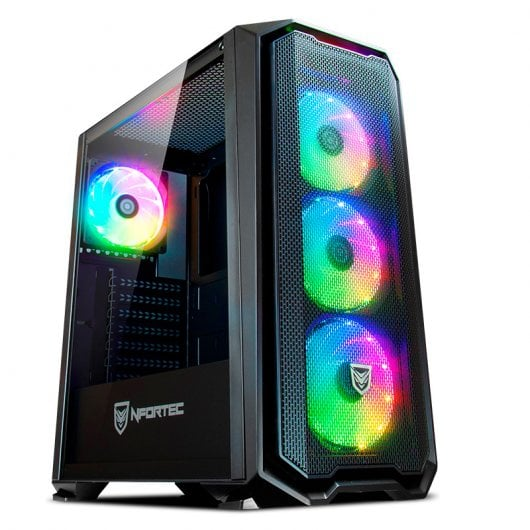
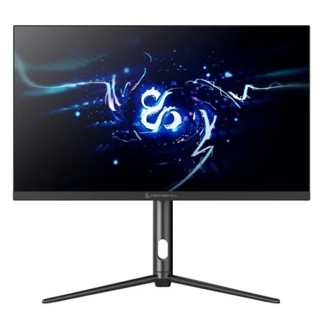

Placa Base
A nivel general, una placa base es responsable de que todos los sistemas funcionen correctamente. Se responsabiliza de la interconexión entre todos los componentes de un aparato electrónico. Por este motivo no es difícil también ver placas base en un teléfono móvil como en cualquier ordenador, de sobremesa o portátil.

Características
Precio
167,41€ en PCComponentes
Procesador
La Unidad Central de Proceso o CPU (Central Processing Unit) es el componente en- cargado de interpretar las instrucciones de los programas y procesar los datos. Tam- bién se le conoce como procesador o microprocesador. Es un componente funda- mental en un ordenador y ha estado presente desde sus inicios.

Características
Precio
204,90€ en PCComponentes
Memoria
El término memoria se refiere al componente dentro de su computadora que le permite acceder a los datos que están almacenados en su computadora a corto plazo. Usted puede reconocer este componente como DRAM, o memoria de acceso aleatorio dinámico.

Características
Precio
78,99€ en PCComponentes
Almacenamiento
El almacenamiento de datos consiste en la conservación de información empleando una tecnología específicamente desarrollada para mantener los datos y que se encuentren accesibles siempre que sean necesarios.

Características
Precio
72,49€ en PCComponentes
Torre
Es una carcasa de metal o plástico, y quizá, la parte más importante del computador. En su interior se encuentran componentes que hacen que todas las otras partes cumplan su función. Es el equivalente al cerebro del computador.

Características
Precio
99,95€ en PCComponentes
Fuente de alimentación
Una fuente de alimentación funciona convirtiendo la potencia de un enchufe de pared y canalizándola hasta cada componente individual en el sistema a través de varios cables.

Características
Precio
66,99€ en PCComponentes
Monitor
Un monitor de la CPU es un programa o aplicación diseñado para rastrear las mediciones de desempeño y estado relacionadas con la unidad de procesamiento central de una computadora o dispositivo conectado a la red.

Características
Precio
499,98€ en PCComponentes